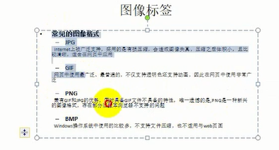

第一个页面
跳转锚点
sunck is a good man
sunck is a good man
sunck is a good man
sunck is a good man
sunck is a good man
sunck is a good mansunck is a good mansunck is a good man
sunck is a good man
sunck is a good man
sunck is a good man
中共第十五届中央候补委员，十六届、十七届、十八届、十九届中央委员，十七届中央政治局委员、常委、
中央书记处书记，十八届、十九届中央政治局委员、常委、中央委员会总书记。第十一届全国人大第一次会议当选为中华人民共和国副主席。
十七届五中全会增补为中共中央军事委员会副主席。第十一届全国人大常委会第十七次会议任命为中华人民共和国中央军事委员会副主席。
十八届一中全会任中共中央军事委员会主席。第十二届全国人大第一次会议当选为中华人民共和国主席、中华人民共和国中央军事委员会主席。
十九届一中全会任中共中央军事委员会主席。第十三届全国人大第一次会议当选为中华人民共和国主席、中华人民共和国中央军事委员会主席。
2013－中央委员会总书记，中共中央军事委员会主席，中华人民共和国主席，中华人民共和国中央军事委员会主席
sunck is a good man
sunck is a good man
sunck is a nice man
sunck is a good man
sunck is a good man
sunck is a good man
sunck is a good man
>
<
"
©

百度一下
来点我哦
- 新闻
- sunck is a good man
- sunck is a good man
- 新闻
- sunck is a good man
- sunck is a good man
- 学院1
- 电子信息工程1
- 电子信息工程11
- 学院2
- 电子信息工程2
| 姓名 |
年龄 |
性别 |
| 第一行第一列ffff |
第一行第二列 |
| 第二行第一列 |
第二行第二列 |
第二行第三列 |
| 第三行第一列 |
第三行第二列 |